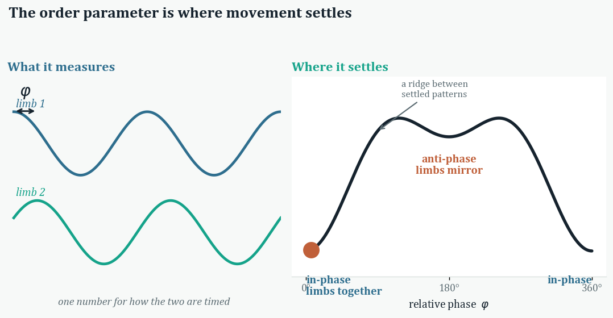
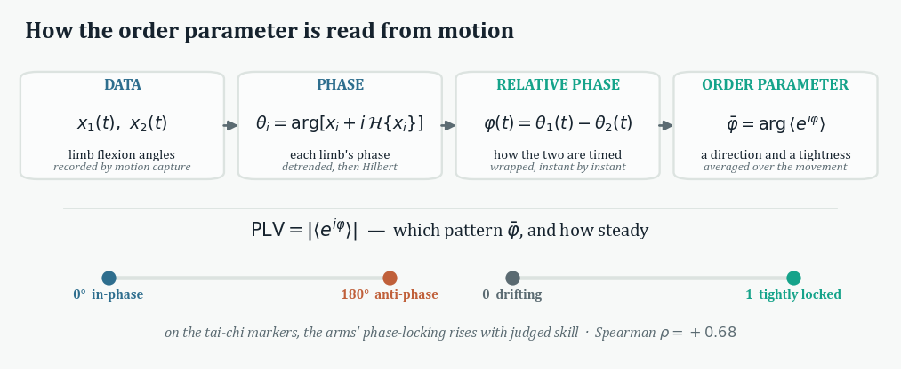
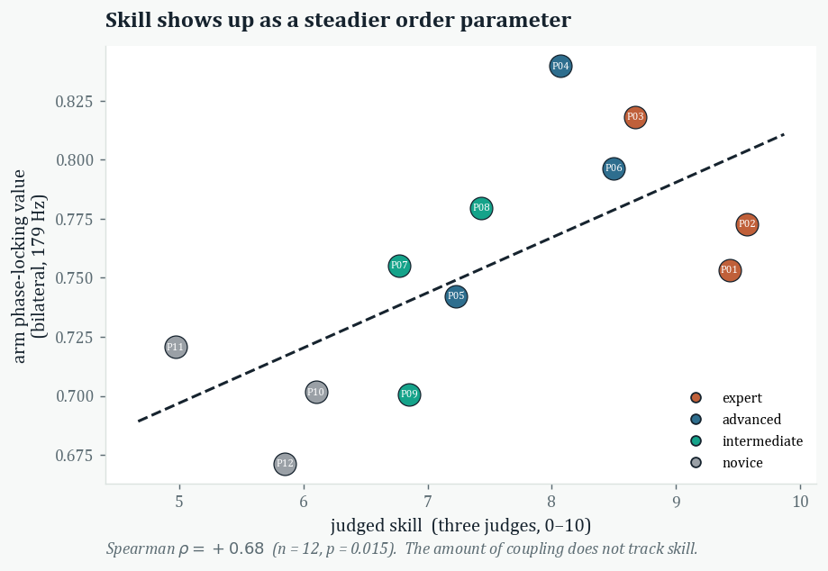

What a metaphor is
A catalyst that selects a coordination the body already affords.
Metaphor describes one thing in the terms of another. Lakoff and Johnson (1980) map one whole domain onto another, $A \to B$. The reading here restricts the source, sending a discrete subset $A'$ of its features onto the full range of a target $B'$, since a coordination draws on only the few features that constrain it. Those features shape the coordination that follows.
Sitting and enacted metaphor
SITTING
run in the mind
$f:A'\to B'$, inferential and analogical, as in “I feel like a million bucks”ENACTED
acted out in the body
$\mathrm{image}:X\mapsto X_{\text{image}}\subseteq X$, restricting the space of coordinationsSitting metaphors reason from source to target, tracing the mapping $f:A'\to B'$ in the mind. An enacted metaphor comes into being as the body performs it, since acting the image out brings the coordination into play. Raising a banana to her ear, a child enacts $\mathrm{Aff}(\text{banana})\cap\mathrm{Act}(\text{phone})$, the intersection of the two, the banana keeping its own affordances throughout, so that “one sees in the banana the affordance of a particular sort of action” (Gallagher and Lindgren 2015, 397).
Metaphor as catalyst
Because enacting the image recruits only the selected features, it narrows the space of possible coordinations, the way a catalyst lowers a reaction’s barrier and comes away unchanged. The teaching image restricts that space, $X\mapsto X_{\text{image}}\subseteq X$, to a subset the body already affords, so one settled coordination becomes the cheapest to reach. Only the selected features constrain the coordination, so fixing them settles it.
The formalism
A body is a set of coupled joints. All the coordination lives in one matrix.
A pose is a vector of joint angles $x \in \mathbb{R}^{n}$. Each posture has an energy cost, so a lower-cost posture occurs more often.
Anatomy and metaphor in one matrix
J splits three ways, each piece a signed graph Laplacian, so a single construction covers both the anatomy and the metaphor.
For a signed, weighted edge set $W$, the Laplacian $L=\bar{D}-W$ uses the absolute-degree diagonal $\bar{D}_{ii}=\sum_{j}\lvert W_{ij}\rvert$. Counting the degree in absolute value keeps J positive-definite even when an edge is negative.
- $\gamma I$, a baseline stiffness, each joint resisting motion on its own.
- $L_{\mathrm{anatomy}}$, the kinematic tree, the bones as positive edges.
- $\beta\,L_{\mathrm{metaphor}}$, the teaching image, signed edges linking limbs, $\beta$ the dial.
How compressed the motion is
Each independent direction of movement has its own variance $\lambda_{i}$ in the covariance $\Sigma$. The participation ratio counts how many of those directions actually move.
What a coupling’s sign fixes
A single teaching image is one coupling, $E=\tfrac{1}{2}\,w\,(a\,x_{i}-b\,x_{j})^{2}$. Its perfect-square expansion reproduces the Laplacian with a sign, the $w a^{2},\ w b^{2}$ diagonal giving $\bar{D}$ and the $-w a b$ off-diagonal giving $-W$. Summing these squares over anatomy and metaphor rebuilds the one signed Laplacian, so a sign is all a coupling adds to it.
POSITIVE EDGE
in-phase
ordinary block $\bar{D}-W$ · joints move together (0°)NEGATIVE EDGE
anti-phase
signless block $\bar{D}+\lvert W\rvert$ · joints mirror (180°)Negative off-diagonals, $J < 0$, read in-phase, positive ones anti-phase. The fixed ratio $(1,r)$ is the same perfect square at unequal coefficients. One builder, the signed Laplacian, does all of it.
Recovering the couplings from motion how it’s coded
Given real motion-capture, the model runs backward, reading the couplings out of the movement, then splitting them by graph support.
- Recover. Take the empirical covariance $\hat{\Sigma}$ of the joint angles across frames and invert it, $\hat{J}=\hat{\Sigma}^{-1}$. The couplings come straight from the data.
- Decompose. On each bone edge, the anatomical weight is the recovered partial coupling, $w_{\mathrm{anat}}=-\hat{J}_{ij}$; build $L_{\mathrm{anat}}$ from those, then $M=\hat{J}-L_{\mathrm{anat}}$. $M$ vanishes on the tree, its off-tree entries the metaphor.
- Read. The sign of each off-tree entry fixes the relation, $M_{ij} < 0$ in-phase and $M_{ij} > 0$ anti-phase, limb to limb.
The model
What one added constraint does to a body’s coordination.
What one constraint does
With one added constraint, an analogy sets which coordination the body takes. The pattern the motion falls into changes. Its number of active dimensions stays fixed.
DIMENSIONALITY
how compressed the motion is
stays fixed under the metaphorPATTERN
which coordination it takes
flips with the taskBodies built differently fall into the same coordination, each reaching it through its own joints. Haken, Kelso and Bunz (1985) call that settled pattern the order parameter.
The teaching image is a signed edge

Frustration
Two images that fight, one “together” at strength $W(1-\lambda)$ and one “mirror” at strength $W\lambda$, land on the same pair. Their signed sum becomes the shared off-diagonal.
At $\lambda=\tfrac12$ the two demands match, so the coupling passes through zero and the coordination freezes in place. The order and compatibility of teaching images should then matter for learning.
The order parameter
The one number the whole coordination settles into, and how it is read from real motion.



The values, per performer
The arm order parameter is the bilateral phase-locking value (0 drifting → 1 locked), how tightly the two arms keep their relative phase across a gesture, on the Qualisys markers at 179 Hz.
| Performer | Level | Skill | Arm PLV |
|---|---|---|---|
| P04 | advanced | 8.1 | 0.840 |
| P03 | expert | 8.7 | 0.818 |
| P06 | advanced | 8.5 | 0.796 |
| P08 | intermediate | 7.4 | 0.780 |
| P02 | expert | 9.6 | 0.773 |
| P07 | intermediate | 6.8 | 0.755 |
| P01 | expert | 9.4 | 0.753 |
| P05 | advanced | 7.2 | 0.742 |
| P11 | novice | 5.0 | 0.721 |
| P10 | novice | 6.1 | 0.702 |
| P09 | intermediate | 6.9 | 0.701 |
| P12 | novice | 5.9 | 0.671 |
Mean 0.75, range 0.67–0.84. Experts and advanced performers keep the steadier arm coordination; novices let it drift. The rank correlation with judged skill is ρ = +0.68.
Figures
Synthetic demonstrations and fits to real motion capture.
| Finding | Measure | Result |
|---|---|---|
| Movement is low-dimensional | CMU participation ratio | ~5 of 50 |
| Couplings follow anatomy | partial-correlation AUC | 0.71–0.82 |
| Sign flips with the task | limb correlation, walk → jump | −0.9 → +1.0 |
| Skill is steadier timing | arm phase-locking vs skill | ρ = +0.68 |
| A Kinect result was a sensor artifact | leg-coupling vs skill, Kinect → Qualisys | +0.71 → −0.51 |
Full per-task and per-performer tables are on the Data tab.


Key terms
In plain language.
- Degrees of freedom
- the independent ways the body can move.
- Synergy
- many joints yoked to move as one.
- Covariance
- how much two joints move together.
- Precision matrix (J)
- the inverse of covariance; which joints are directly coupled.
- Graph Laplacian
- turns a network of couplings into an energy that scores how much connected joints disagree.
- Signed edge
- a coupling that is “+” (move together) or “−” (mirror).
- In-phase / anti-phase
- moving together (0°) versus opposing (180°).
- Order parameter
- one number for the whole coordination pattern.
- Participation ratio (PR)
- the effective number of independent directions the motion uses, (Σλ)²/Σλ².
- Partial correlation
- two joints’ coupling with all others held fixed.
- Relative phase / phase-locking
- where two limbs are in their cycle; how steadily they hold it.
- Frustration
- two conflicting images cancel, freezing the motion.
- AUC
- a 0.5–1 score: 0.5 = chance, 1 = perfect recovery.
- Positive-definite
- a stability condition: the energy has one clear bottom.